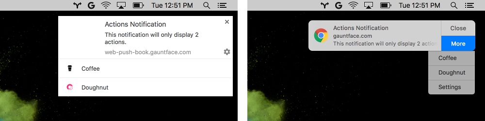
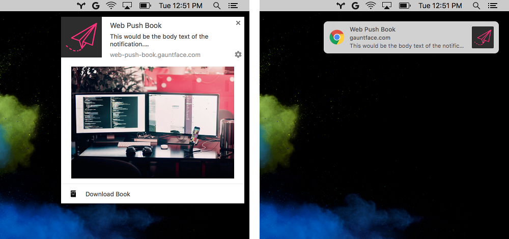
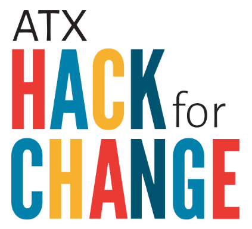

Bleeding Edge Web: May 2017
Announcements
News From the Bleeding Edge
— Corey Butler (@goldglovecb)
Lightning Talk: Async Components in VueJS
— Ted Patrick (@__ted__)
The History & Future of Speaking with Machines
— Matt Buck (@techpeace)
News from the
Bleeding Edge
Browser Pop Quiz
Last check — April 26, 2017:
Browser Pop Quiz
As of May 24, 2017:
Chrome 58
Released April 19 (Same as last month)
Chrome 58 "ish":
What we missed:
Chrome Notifications


Firefox 53
Released April 19 — Release Notes (Same as last month)
Nothing major, lots of minor improvements.
Firefox 54 ships on June 13, 2017
Edge 15 (16188)
Released May 04 (Mostly Browsing Experience)
- PDF Improvements (Form Filling, Annotations, TOC)
- Application Guard (Windows Defender)
- Shared Memory & Atomics (aka Holy crap, are we're multithreading JS?)
Microsoft Edge: Motivating the Industry
Safari 10.1 (reminder... again)
Widely released March 27 — Release Notes
Translation: Minor bug fixes.
Libraries, Tools &
Frameworks
Help build your community!
A civic hackathon where we hack solutions to our community problems.

Community not your thing?
Help destroy your community!
Create an engaging visualization of how you see technology changing the future of conflict in the year 2030.
And now for something completely different...
Thanks!
 ←
→
←
→
/
#